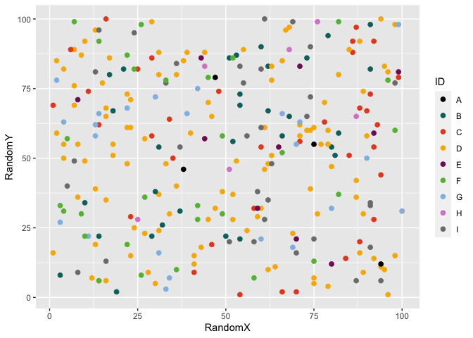
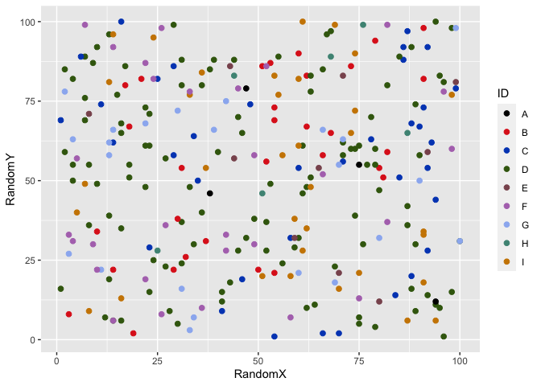

Introduction
poispalette is an R package that facilitates the use of Poisson Consulting colour palettes in data plots and maps.
Installation
To install the latest development version from GitHub
# install.packages("remotes")
remotes::install_github("poissonconsulting/poispalette")To install the latest developmental release from the Poisson drat repository
# install.packages("drat")
drat::addRepo("poissonconsulting")
install.packages("poispalette")Demonstration
library(ggplot2)
library(poispalette)
ggplot(poispalette::points, aes(x = RandomX, y = RandomY)) +
geom_point(aes(colour = ID), size = 2) +
poispalette::scale_colour_disc_poisson()
ggplot(poispalette::points, aes(x = X)) +
geom_histogram(aes(fill = ID), binwidth = 30) +
poispalette::scale_fill_disc_poisson()
ggplot(poispalette::lines, aes(x = DateTimeData, y = Value)) +
geom_line(aes(colour = ID), size = 2) +
poispalette::scale_colour_disc_poisson(palette = "legacy")
ggplot(poispalette::points, aes(x = X, y = Y)) +
geom_point(aes(colour = RandomX), size = 2) +
poispalette::scale_colour_grad_poisson(palette = c("yellow", "red", "dark blue"))Code of Conduct
Please note that the poispalette project is released with a Contributor Code of Conduct. By contributing to this project, you agree to abide by its terms.